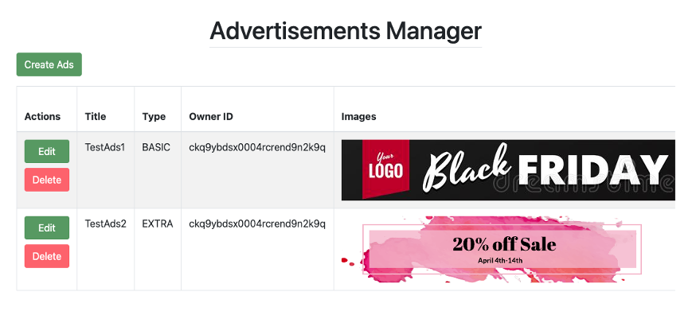

Showcase


A community based non profit developing tools to empower communities to work together to create sustainable cities
MyLivingCity web application works as a tool to create and support community projects that encourage change. This platform aims to improve the social involvement within local communities by creating a place for users to interact with ideas within their local community. MyLivingCity’s broad goal is to create more conversation, have a place to support local community ideas and provide a robust idea proposal platform.
Nicolas Le-blanc works as a local engineer in the Victoria area and has a high level of technical knowledge. MyLivingCity has gone through a few rounds of Capstone and Co-op terms, confirming Nicolas’s trust in students and their skills. Nicolas has an immense passion for community conversation and works closely with the development team to ensure success of the project.
The project will develop and implement a web application that will allow users to share ideas within their communities. It will include:
MyLivingCity development team uses agile modelling. The development is scheduled into six, two-week sprints in accordance with task priority and units of work from project backlog. Using Jira the tasks are distributed to team members based on skill set and units of work available. The scrum meetings are hosted by the project manager with team members four days a week. At the end of the two week sprint a review is held to discuss what was completed from the burnup log. A weekly meeting is held with faculty to discuss the current sprint. Any encountered issues can be posted on the Jira along with questions about tasks. The jira is updated by the development team to show progress of tasks or notify the other developers of bugs for the current sprint.

Lengfeng Yu is the backend developer of the MyLivingCity project. He is responsible for writing functional endpoints for other group members to implement their functionalities. As a back-end developer, Lengfeng Yu is familiar with express router, prisma ORM and multer middleware, and he is capable of utilizing those technologies to rapidly add new features to the backend for other group members.

Yuhao Jiang is the front-end developer of the MyLivingCity project. He is familiar with the use of HTML, CSS and Javascript, and responsible for the website's front page development with React and related packages on both desktop and mobile view.

Mac is the front-end/back-end developer for the MyLivingCity project. His main focus is linking the newly designed elements to the backend, ensuring the added features are tested and functioning correctly. He is confident in his skills with databases and react-based projects, and has been furthering his existing knowledge on Typescript during the MyLivingCity project.